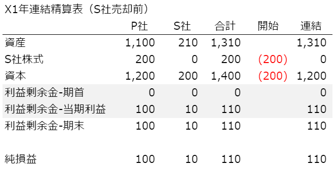
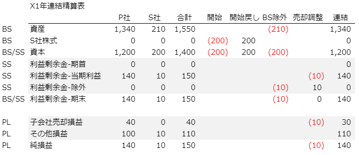

連結子会社の売却損益計算：単純なケース
- 会計/経理
連結決算の仕事の中で最も難しい処理は何かと聞かれたら、子会社の売却損益の計算だと私は答えます。もちろん、子会社の程度にもより、歴史の浅い設立出資した連結子会社の売却であれば大した手間はかからないでしょう。しかし、
- 買収を行って子会社となり、
- 組織再編のためグループ会社間で株式を何度も譲渡し、
- 多数の未実現損益の取消しを行っている会社の株式を、
- 数度の売却を経て連結除外する
という状況は、経理に携わる人間にとって悪夢以外の何ものでもありません。
子会社の売却自体がまれな取引であるうえ、それが複雑怪奇な処理となれば、処理が終わった瞬間に何をしたのか忘れてしまうでしょう。そして、数年後に同じイベントが起こって愕然としてしまうのです。そんな困った状況にならないために、子会社の売却損益を求めるにあたっての基礎をメモしておこうと思います。
もっとも簡単な状況
BSと仕訳から処理の流れを追う
子会社の売却処理で、簡単なのはグループが設立した歴史の浅い会社の売却になるのではないでしょうか。簡単な数値例を使って、処理の流れを見ていきます。
- 親会社（P社）が子会社（S社）を100%出資でX0年の期末に設立
- 設立時点の資本金は200
- X1年の期末を迎え１年間でP社：100、S社：10の純利益を得た
X0年とX1年のP社、S社のBSと連結BSは以下の形になっているとします。
X0年 期末BS
| P社 | |||
| 資産 | 1,000 | 資本 | 1,200 |
| S社株式 | 200 | ||
| S社 | |||
| 資産 | 200 | 資本 | 200 |
| 連結 | |||
| 資産 | 1,200 | 資本 | 1,200 |
【連結修正仕訳】
| 投資と資本の相殺消去 | 借方 | 貸方 |
| 資本 | 200 | |
| S社株式 | 200 |
【連結精算表】
| P社 | S社 | 合計 | 開始 | 連結 | |
| 資産 | 1,000 | 200 | 1,200 | 1,200 | |
| S社株式 | 200 | 0 | 200 | (200) | 0 |
| 資本 | 1,200 | 200 | 1,400 | (200) | 1,200 |
X1年 期末BS
| P社 | |||
| 資産 | 1,100 | 資本 | 1,200 |
| S社株式 | 200 | 利益剰余金 | 100 |
| S社 | |||
| 資産 | 210 | 資本 | 200 |
| 利益剰余金 | 10 | ||
| 連結 | |||
| 資産 | 1,310 | 資本 | 1,200 |
| 利益剰余金 | 110 | ||
【連結修正仕訳】
| 投資と資本の相殺消去 | 借方 | 貸方 |
| 資本 | 200 | |
| S社株式 | 200 |
【連結精算表】
ここまでは、特に問題ないと思います。では、この会社をX1年の期末に売却した時の連結上の原価（＝「連結上の簿価」）はいくらになるでしょうか？
- P社の単体決算上は、子会社株式の簿価（200）が売却時の原価となる
- 連結上は、S社がX1年に10を稼いでいるため原価は単体よりも10大きくなる
よって、210が連結上の簿価となります。ポイントは、子会社が連結されていた時にどれだけ剰余金を積み増したかになります。売却時の連結仕訳は次の通りとなります。
| 開始仕訳の振り戻し | 借方 | 貸方 |
| S社株式 | 200 | |
| 資本 | 200 |
| S社BSの除外 | 借方 | 貸方 |
| 資本 | 200 | |
| 利益剰余金-除外 | 10 | |
| 資産 | 210 |
| 売却損益の調整 | 借方 | 貸方 |
| 子会社売却損益 | 10 | |
| 利益剰余金-除外 | 10 |
この最後の仕訳が重要となります。S社が連結子会社であった期間に計上した純利益が、連結上の売却損益の調整額となります。従って、連結子会社を売却した時の損益は、
単体上の売却損益 － 子会社の取得後剰余金
で求めることができます。
例）S社を240で売却した場合の損益計算
S社がX1年末に240で売却された場合の売却損益を見ていきます。まず、P社単体決算では売却額240に対して、S社株式の簿価は200なので40の売却損益を計上します。一方、連結では上の「売却損益の調整」仕訳にある通り、子会社売却損益を10減額する仕訳が入っています。よって、40 - 10 = 30が連結決算での子会社売却損益となります。
下図が240で売却した場合の連結精算表です。S社を売却したので、P社単体と連結のBS残高が一致しています。
最も単純化したケースを見てみましたが、この場合でもそれなりの仕訳が発生しています。最初に記載したような複雑な状況になると仕訳の数も増えていき、理解が難しくなっていきます。（つづく）